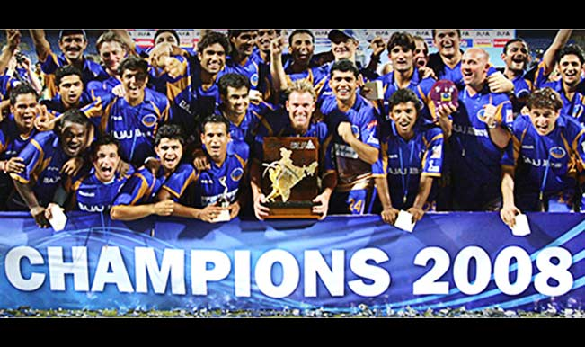

In a match which went down to the last ball, Rajasthan Royals defeated Chennai Super Kings in the final to win the title,with Yusuf Pathan named the player of the match and Shane Watson adjudged the player of the tournament.Sohail Tanvir won the purple cap for being the top wicket-taking bowler while Shaun Marsh won the orange cap for leading run-scorer in the tournament. Shreevats Goswami was awarded the best under-19 player award and the special award for Fair Play was won by the Chennai Super Kings.
